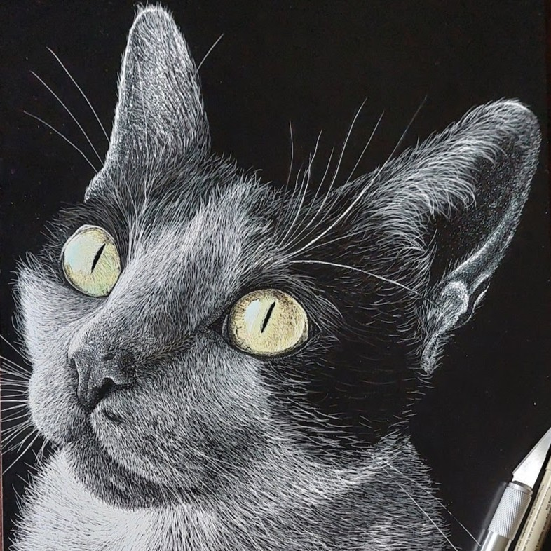
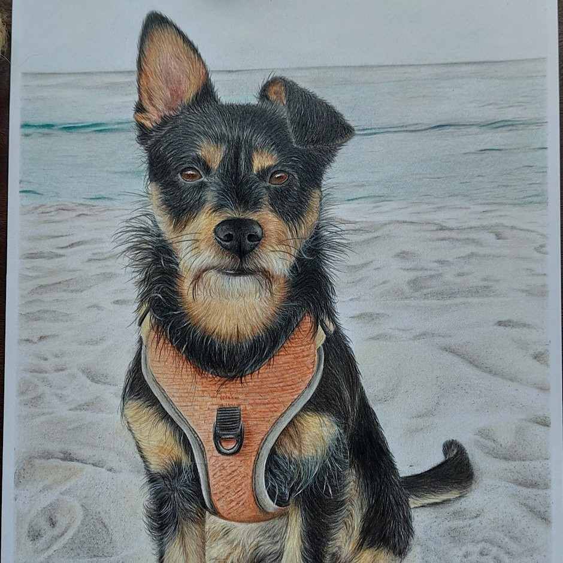
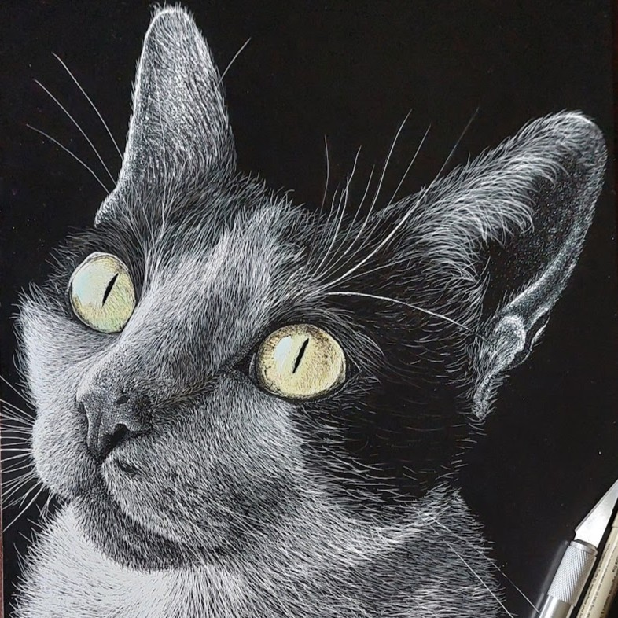
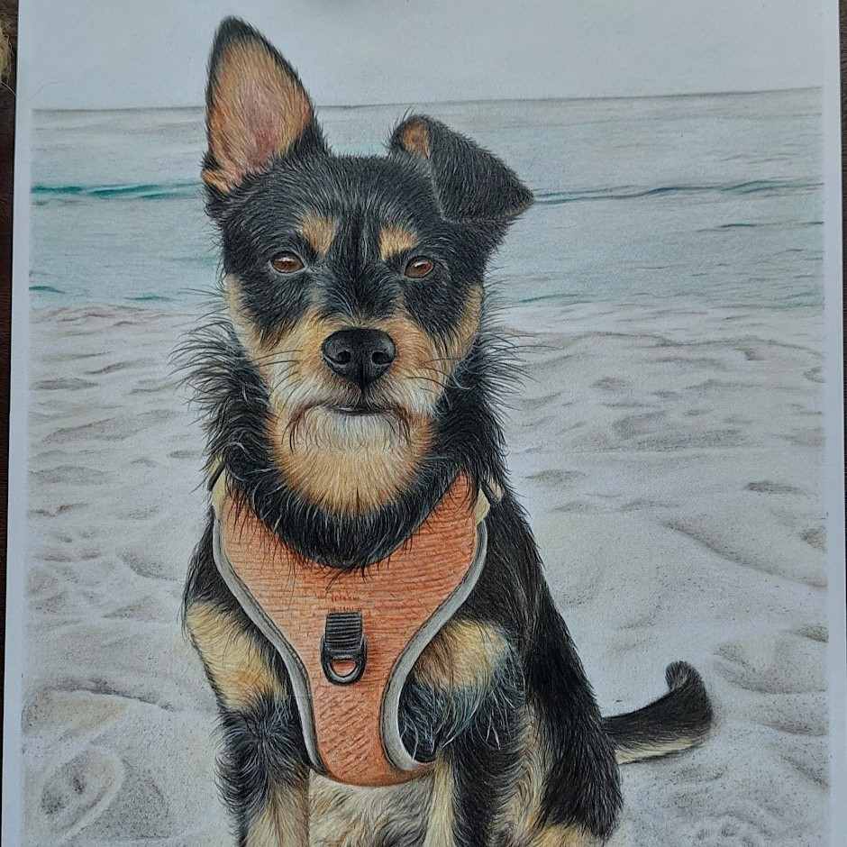

FAQ
Deixo aqui a resposta às questões mais frequentes, no entanto, podem
sempre contactar-me diretamente através das redes sociais ou email que
tirei todo o gosto em esclarecer.
Quais são os tamanhos disponíveis?
Existem vários tamanhos desde A1 a A5, no entanto, em certas ocasiões
é possivel escolher um tamanho ou formato diferente basta falarem
comigo. O mais importante é adequar o tamanho do quadro ao local onde
vai estar exposto e acima ao numero de patudos que pretende retratar.
Para facilitar eu dou algumas dicas na página
Preçário
onde podem ver os tamanhos, preços e o que se adequa melhor consoante
a situação.
Quais são os preços?
Os preços variam principlamente consoante o tamanho e o número de
patudos. É importante adequar o número de patudos ao tamanho do
quadro. Relativamente ao preço podes consultar na página
Preçário.
Que técnica devo escolher?
Aqui depende muito do gosto de cada um e do enquandramento do quadro,
ou seja, em que local pretendem ter o quadro exposto e se a técnica se
enquadra com a decoração em volta. Eu atualmente tenho me focado em 3
técnicas, lápis de cor, pastel e scratch board. Para veres as
diferenças podes consultar a página
Guia.
Quais as melhores fotos para o retrato?
As fotos de referência são sem duvida uma ferramenta muito importante
para eu conseguir captar a verdadeira essencia do vosso patudinho.
Apesar de existir um foto principal, aquela na qual eu me vou basear
para fazer o retrato e que deve transmitir o máximos de personalidade
do vosso patudo, é importante que me tentem enviar o máximo número de
fotos possiveis para eu conseguir extrair as cores em diferentes
condições de luz e angulos, a direção dos pêlos etc. Podem consultar
algumas dicas que eu juntei na página
Guia.
Como posso pedir um retrato?
Por enquanto a melhor forma de pedir um retrato é entrando em contacto
comigo diretamente nas redes sociais ou por email. Desta forma consigo
esclarecer eventuais dúvidas, dar feedback das fotos e dar também uma
estimativa de prazos/preços.
 


